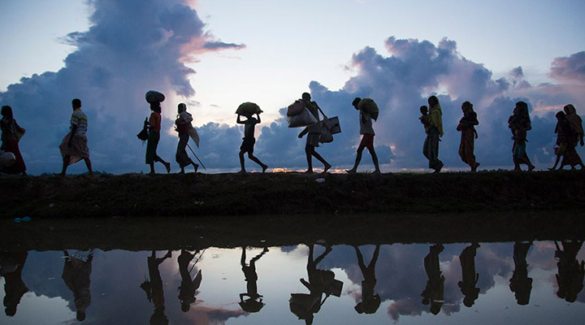
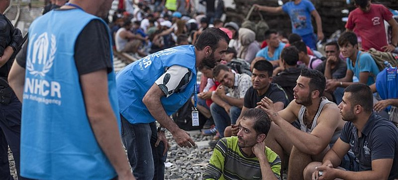
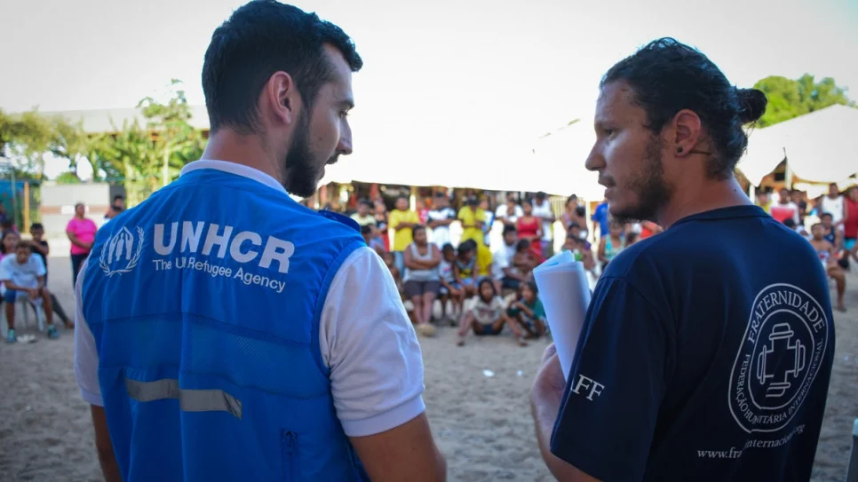

|
ORGANIZAÇÕES
|
SAIBA MAIS
|
|  |
ACNUR |
|  | ACNUR ACNUR para além das fronteiras europeias e das pessoas afetadas pela Segunda Guerra Mundial. Em 1995, a Assembleia Geral designou o ACNUR como responsável pela proteção e assistência dos apátridas em todo o mundo. Em 2003, foi abolida a cláusula que obrigava a renovação do mandato do ACNUR a cada triênio. O ACNUR já auxiliou dezenas de milhões de pessoas a recomeçarem suas vidas. Por seu trabalho humanitário, recebeu duas vezes o Prêmio Nobel da Paz (1954 e 1981). Atualmente, a agência conta com aproximadamente 11 mil funcionários e está presente em cerca de 130 países com mais de 450 escritórios. Por meio de parcerias com centenas de organizações não governamentais, o ACNUR presta assistência e proteção a mais de 60 milhões de homens, mulheres e crianças. O ACNUR se mantém por meio de contribuições voluntárias de países, além de doações arrecadadas junto ao setor privado e a doadores individuais. O orçamento anual da agência ultrapassa os US$ 7,3 bilhões. |
|  | O QUE ELES FAZEM? O ACNUR frequentemente fornece transporte e auxílio para que os repatriados possam recomeçar sua vida, por meio de doações financeiras e projetos de geração de renda, entre outros. jurídica, social, econômica e cultural no país de refúgio, além de seus direitos respeita-dos. O principal objetivo no ACNUR é assegurar os direitos e o bem-estar das pessoas que foram forçadas a deixar suas casas. Juntamente com parceiros, trabalhamos para garantir que todos, em caso de necessidade, tenham o direito de buscar e receber refúgio de forma segura em outro país. |